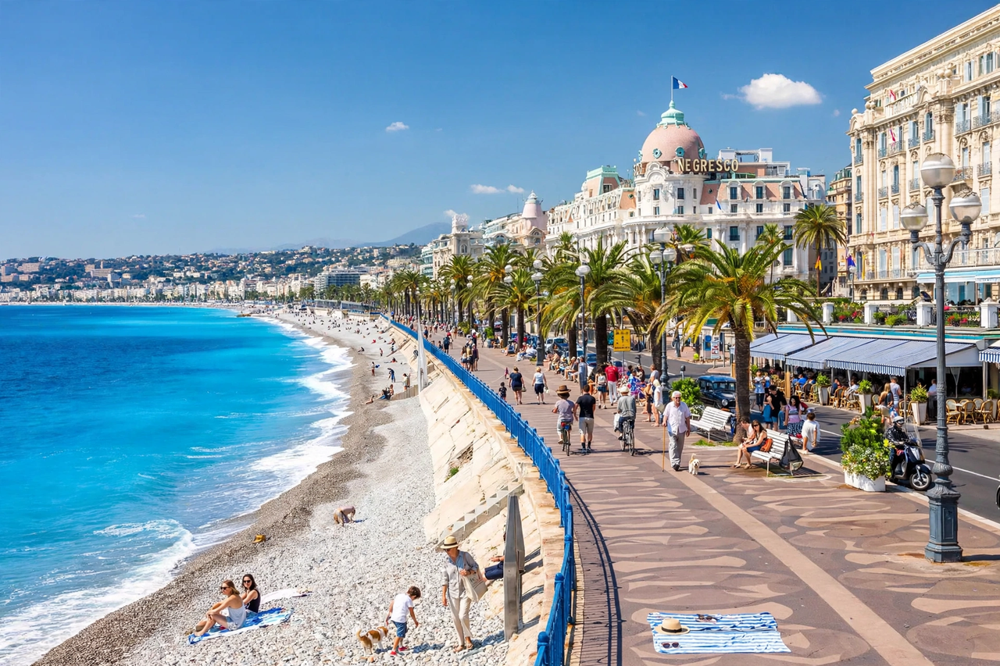

| French Riviera Côte d'Azur | |
|---|---|
 | |
| Country | France (and Monaco) |
| Region | Provence-Alpes-Côte d'Azur |
| Largest city | Nice |
| Coastline | Mediterranean Sea |
The French Riviera, known in French as the Côte d'Azur (literally "Azure Coast"), is the Mediterranean coastline of the southeast corner of France. There is no official boundary, but it is usually considered to extend from Toulon, Le Lavandou or Saint-Tropez in the west to Menton on the France–Italy border in the east. The coast is entirely within the Provence-Alpes-Côte d'Azur region of France. The principality of Monaco is a semi-enclave within the region, surrounded on three sides by France and fronting the Mediterranean.
The French Riviera contains the seaside resorts of Cap-d'Ail, Beaulieu-sur-Mer, Saint-Jean-Cap-Ferrat, Villefranche-sur-Mer, Antibes, Juan-les-Pins, Cannes, and Theoule-sur-Mer. It is also known for the independent microstate of Monaco, the city of Nice — the region's capital and largest city — and for events such as the Cannes Film Festival and the Monaco Grand Prix.
The area was among the earliest modern resort areas. It began as a winter health resort for the British upper class at the end of the 18th century. With the arrival of the railway in the mid-19th century, it became the playground and vacation spot of British, Russian, and other aristocrats, such as Queen Victoria, Tsar Alexander II and King Edward VII. In the first half of the 20th century, it was frequented by artists and writers, including Pablo Picasso, Henri Matisse, Edith Wharton, Somerset Maugham and Aldous Huxley, as well as wealthy Americans and Europeans.
After World War II, it became a popular destination for tourists and convention goers. Many celebrities, such as Elton John and Brigitte Bardot, have homes in the region. The Riviera has a Mediterranean climate with sunny days for most of the year, and is known for its beaches, yachts, and the azure colour of its sea, which gave the coast its French name.
The Riviera has a Mediterranean climate, with sunny days over much of the year. It covers the coastal departments of Alpes-Maritimes and Var, and part of Bouches-du-Rhône. Winters are mild and summers hot and dry. Nice averages around 2,700 hours of sunshine a year. The region is sheltered from northern winds by the Alps and the Massif des Maures, which contributes to its mild winter temperatures compared with other Mediterranean resorts.
Major places along the coast include Nice, Cannes, Antibes, Grasse, Monaco, Menton, Saint-Tropez, Hyères and Fréjus. Nice Côte d'Azur Airport is France's third-busiest airport, serving the region. The A8 autoroute and the Marseille–Ventimiglia railway run along much of the coast.
The Riviera has inspired numerous artists. The region hosts the Cannes Film Festival, held each May since 1946, the Nice Jazz Festival, and the Monaco Grand Prix Formula One race. Museums devoted to Picasso (in Antibes), Matisse and Chagall (in Nice) reflect its artistic heritage.